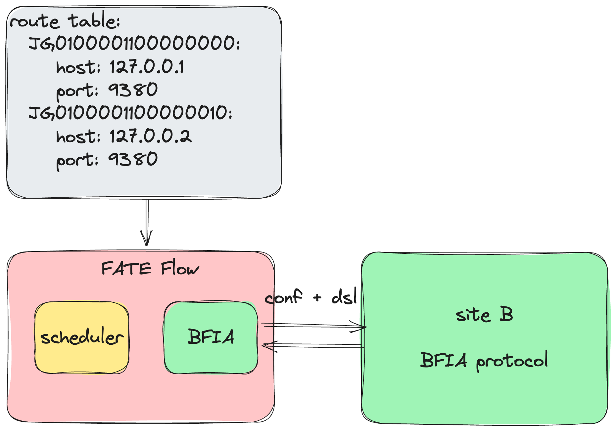

BFIA Integration Guide¶
The BFIA protocol, organized by the Beijing Financial Technology Industry Alliance and led by China UnionPay, is an API interface specification established jointly by over 60 units, including major financial institutions, telecom operators, internet companies, technology firms, testing agencies, and research institutes. FATE 2.0 has adapted this protocol across various layers like Pipeline, Scheduling, Communication, and more. This document will guide how to perform federated learning with FATE framework using the BFIA protocol.
1. Pipeline¶
The pipeline constructs a unified client for FATE's interoperation, generating a DAG configuration based on the FATE 2.0 protocol. The pipeline doesn't directly call the BFIA protocol API; instead, it utilizes the FATE protocol API and transforms it into BFIA protocol execution within the FATE Flow through an adapter pattern.
1.1 FATE Algorithm¶
from fate_client.pipeline import FateFlowPipeline
from fate_client.pipeline.components.fate import CoordinatedLR, PSI
from fate_client.pipeline.interface.channel import DataWarehouseChannel
guest = "JG0100001100000010"
host = "JG0100001100000010"
arbiter = "JG0100001100000010"
pipeline = FateFlowPipeline().set_parties(guest=guest, host=host, arbiter=arbiter)
pipeline.set_site_role("guest")
pipeline.set_site_party_id(guest)
psi_0 = PSI("psi_0",
input_data=[DataWarehouseChannel(dataset_id="experiment#breast_hetero_guest", parties=dict(guest=guest)),
DataWarehouseChannel(dataset_id="experiment#breast_hetero_host", parties=dict(host=host))])
lr_0 = CoordinatedLR("lr_0",
epochs=10,
batch_size=300,
optimizer={"method": "SGD", "optimizer_params": {"lr": 0.1}, "penalty": "l2", "alpha": 0.001},
init_param={"fit_intercept": True, "method": "zeros"},
train_data=psi_0.outputs["output_data"],
learning_rate_scheduler={"method": "linear", "scheduler_params": {"start_factor": 0.7,
"total_iters": 100}})
pipeline.add_tasks([psi_0, lr_0])
pipeline.protocol_kind = "bfia"
pipeline.conf.set(
"extra",
dict(initiator={'party_id': guest, 'role': 'guest'})
)
pipeline.guest.conf.set("resources", dict(cpu=-1, disk=-1, memory=-1))
pipeline.hosts[0].conf.set("resources", dict(cpu=-1, disk=-1, memory=-1))
pipeline.compile()
pipeline.fit()
1.2 UnionPay Algorithm¶
from fate_client.pipeline import FateFlowPipeline
from fate_client.pipeline.adapters.bfia.components.unionpay.intersection import Intersection
from fate_client.pipeline.adapters.bfia.components.unionpay.hetero_lr import HeteroLR
from fate_client.pipeline.interface import DataWarehouseChannel
pipeline = FateFlowPipeline().set_parties(
guest="JG0100001100000010",
host="JG0100001100000010",
arbiter="JG0100001100000010"
)
pipeline.set_site_role("guest")
pipeline.set_site_party_id("JG0100001100000010")
intersection_0 = Intersection(
"intersect_rsa_1",
id="id",
intersect_method="rsa",
only_output_key=False,
rsa_params=dict(
final_hash_method="sha256",
hash_method="sha256",
key_length=2048
),
sync_intersect_ids=True,
connect_engine="mesh",
train_data=[
DataWarehouseChannel(dataset_id="testspace#test_guest", parties=dict(guest="JG0100001100000010")),
DataWarehouseChannel(dataset_id="testspace#test_host", parties=dict(host="JG0100001100000010"))
]
)
hetero_lr_0 = HeteroLR(
"hetero_logistic_regression_1",
id="id",
label="y",
batch_size=-1,
penalty="L2",
early_stop="diff",
tol=0.0001,
max_iter=2,
alpha=0.01,
optimizer="nesterov_momentum_sgd",
init_param={"init_method":"zeros"},
learning_rate=0.15,
connect_engine="mesh",
train_data=intersection_0.outputs["train_data"]
)
pipeline.add_task(intersection_0)
pipeline.add_task(hetero_lr_0)
pipeline.conf.set(
"extra",
dict(initiator={'party_id': 'JG0100001100000010', 'role': 'guest'})
)
pipeline.protocol_kind = "bfia"
pipeline.guest.conf.set("resources", dict(cpu=-1, disk=-1, memory=-1))
pipeline.hosts[0].conf.set("resources", dict(cpu=-1, disk=-1, memory=-1))
pipeline.compile()
pipeline.fit()
1.3 Other BFIA Protocol Algorithms¶
1.3.1 Pipeline Adaptation Development:¶
To integrate other algorithms, follow these steps: - Component Description File: Place the algorithm component description file in pipeline-component-define - Component Definition: Place the algorithm component definition file in pipeline-component
2. Scheduling¶

2.1 Modifying Configurations¶
- Modify Route-Table.
- Update local-site-settings
LOCAL_SITE_ID: ID of the local site.STORAGE_ADDRESS: S3 storage address.TRANSPORT: Communication engine address used by the local algorithm.CONTAINER_LOG_PATH: Local path for container logs.CALLBACK_ADDRESS: Address for scheduling service used by the algorithm for callbacks.
2.2 Registering Algorithms¶
{
"name": "unionpay",
"device": "docker",
"version": "2.0.0",
"metadata": {
"base_url": "",
"image": "unionpay:2.0.0"
},
"protocol": "bfia",
"components_description": {}
}
Registration Configuration Explanation:
- name: Name of the provider/vendor.
- device: Mode of algorithm execution, currently supporting "docker".
- version: Algorithm version.
- metadata: Image information.
- protocol: Protocol used by the algorithm.
- components_description: Description of algorithm components, reference BFIA Algorithm Self-description
2.2.1 Registering FATE Algorithms¶
flow provider register -c examples/bfia/fate/register/fate_components.json
2.2.2 Registering UnionPay Algorithms¶
flow provider register -c examples/bfia/unionpay/register/unionpay_components.json
2.2.3 Registering Other Algorithms¶
You can use the above configuration to register algorithm images from other vendors into the FATE Flow service. They will be automatically loaded and run as containers during execution.
3. Usage¶
- Modify configurations as outlined in section 2.1.
- Register corresponding algorithms as described in section 2.2.
3.1 Using FATE Algorithm Images¶
3.1.1 Data Upload¶
3.1.1.1 Upload¶
- Install FATE Flow and Flow Cli
pip install fate_flow==2.0.0 pip install fate_client==2.0.0 - Upload data to s3 storage
Modify the parameters
import os import tempfile from fate_flow.adapter.bfia.container.wraps.wraps import DataIo from fate_flow.components.components.upload import Upload, UploadParam from fate_flow.entity.spec.dag import Metadata def upload_data(s3_address, namespace, name, file, meta, head=True, partitions=16, extend_sid=True, storage_engine="standalone"): upload_object = Upload() params = { 'name': name, 'namespace': namespace, 'file': file, 'storage_engine': storage_engine, 'head': head, 'partitions': partitions, 'extend_sid': extend_sid, 'meta': meta } params = UploadParam(**params) with tempfile.TemporaryDirectory() as data_home: os.environ["STANDALONE_DATA_HOME"] = data_home data_meta = upload_object.run(params).get("data_meta") metadata = Metadata(metadata=dict(options=dict(partitions=partitions), schema=data_meta)) data_path = os.path.join(data_home, namespace, name) engine = DataIo(s3_address) engine.upload_to_s3(data_path, name=name, namespace=namespace, metadata=metadata.dict()) if __name__ == "__main__": s3_address = "s3://127.0.0.1:9000?username=admin&password=12345678" file = 'examples/data/breast_hetero_guest.csv' namespace = "upload" name = "guest" meta = { "delimiter": ",", "label_name": "y", "match_id_name": "id" } upload_data(s3_address=s3_address, namespace=namespace, name=name, file=file, meta=meta)s3_address,file,namespace,name,metain the above code with actual values, where:s3_address: s3 storage address file: local path of the data namespace: FATE table namespace name: FATE table name meta: Data metadata
3.1.1.2 dataframe-transformer¶
Explanation: The upload process stores data in the s3 storage. FATE algorithms depend on dataframe-format datasets. FATE provides the dataframe-transformer component for data conversion. In the BFIA protocol, the input parameter for data is dataset_id, which FATE adapts as $namespace + '#' + $name
- Configuration: dataframe-transformer
- Replace JG0100001100000010 in the configuration with the actual site ID
- Modify dataset_id to $namespace + '#' + $name, where namespace and name are the parameters set for upload.
dag:
tasks:
transformer_0:
inputs:
data:
table:
data_warehouse:
dataset_id: upload#guest
dag:
tasks:
transformer_0:
parameters:
name: breast_hetero_guest
namespace: experiment
dataframe-transformer component: flow job submit -c examples/bfia/fate/job/dataframe_transformer.yaml
3.1.2 Running FATE Algorithm Components¶
Jobs can be submitted via CLI, pipelines, or the BFIA's restful-api
- Submitting jobs via CLI:
- Configuration: psi-lr, psi-sbt
- Command:
flow job submit -c examples/bfia/fate/job/psi_lr.yaml - Submitting jobs via pipelines: psi-lr, psi-sbt
- Using the restful-api: psi-lr, psi-sbt
3.2 Using Algorithm Images from Other Vendors¶
3.2.1 Data Upload¶
Each vendor provides its own data upload interface.
3.2.2 Running Algorithm Components from Other Vendors (UnionPay example)¶
Jobs can be submitted via CLI, pipelines, or the BFIA's restful-api